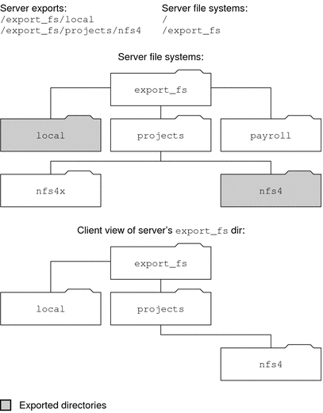

|
|||
|
Part I Network Services Topics Part II Accessing Network File Systems Topics 4. Managing Network File Systems (Overview) 5. Network File System Administration (Tasks) 6. Accessing Network File Systems (Reference) Commands for Troubleshooting NFS Problems 8. Planning and Enabling SLP (Tasks) 10. Incorporating Legacy Services Part V Serial Networking Topics 15. Solaris PPP 4.0 (Overview) 16. Planning for the PPP Link (Tasks) 17. Setting Up a Dial-up PPP Link (Tasks) 18. Setting Up a Leased-Line PPP Link (Tasks) 19. Setting Up PPP Authentication (Tasks) 20. Setting Up a PPPoE Tunnel (Tasks) 21. Fixing Common PPP Problems (Tasks) 22. Solaris PPP 4.0 (Reference) 23. Migrating From Asynchronous Solaris PPP to Solaris PPP 4.0 (Tasks) 25. Administering UUCP (Tasks) Part VI Working With Remote Systems Topics 27. Working With Remote Systems (Overview) 28. Administering the FTP Server (Tasks) 29. Accessing Remote Systems (Tasks) Part VII Monitoring Network Services Topics |
How the NFS Service WorksThe following sections describe some of the complex functions of the NFS software. Note that some of the feature descriptions in this section are exclusive to NFS version 4. Note - If your system has zones enabled and you want to use this feature in a non-global zone, see System Administration Guide: Solaris Containers-Resource Management and Solaris Zones for more information. Version Negotiation in NFSThe NFS initiation process includes negotiating the protocol levels for servers and clients. If you do not specify the version level, then the best level is selected by default. For example, if both the client and the server can support version 3, then version 3 is used. If the client or the server can only support version 2, then version 2 is used. Starting in the Solaris 10 release, you can set the keywords NFS_CLIENT_VERSMIN, NFS_CLIENT_VERSMAX, NFS_SERVER_VERSMIN, NFS_SERVER_VERSMAX in the /etc/default/nfs file. Your specified minimum and maximum values for the server and the client would replace the default values for these keywords. For both the client and the server the default minimum value is 2 and the default maximum value is 4. See Keywords for the /etc/default/nfs File. To find the version supported by the server, the NFS client begins with the setting for NFS_CLIENT_VERSMAX and continues to try each version until reaching the version setting for NFS_CLIENT_VERSMIN. As soon as the supported version is found, the process terminates. For example, if NFS_CLIENT_VERSMAX=4 and NFS_CLIENT_VERSMIN=2, then the client attempts version 4 first, then version 3, and finally version 2. If NFS_CLIENT_VERSMIN and NFS_CLIENT_VERSMAX are set to the same value, then the client always uses this version and does not attempt any other version. If the server does not offer this version, the mount fails. Note - You can override the values that are determined by the negotiation by using the vers option with the mount command. See the mount_nfs(1M) man page. For procedural information, refer to Setting Up NFS Services. Features in NFS Version 4Many changes have been made to NFS in version 4. This section provides descriptions of these new features. Note - Starting in the Solaris 10 release, NFS version 4 does not support the LIPKEY/SPKM security flavor. Also, NFS version 4 does not use the mountd, nfslogd, and statd daemons. For procedural information related to using NFS version 4, refer to Setting Up NFS Services. Unsharing and Resharing a File System in NFS Version 4With both NFS version 3 and version 4, if a client attempts to access a file system that has been unshared, the server responds with an error code. However, with NFS version 3 the server maintains any locks that the clients had obtained before the file system was unshared. Thus, when the file system is reshared, NFS version 3 clients can access the file system as though that file system had never been unshared. With NFS version 4, when a file system is unshared, all the state for any open files or file locks in that file system is destroyed. If the client attempts to access these files or locks, the client receives an error. This error is usually reported as an I/O error to the application. Note, however, that resharing a currently shared file system to change options does not destroy any of the state on the server. For related information, refer to Client Recovery in NFS Version 4 or see the unshare_nfs(1M) man page. File-System Namespace in NFS Version 4NFS version 4 servers create and maintain a pseudo-file system, which provides clients with seamless access to all exported objects on the server. Prior to NFS version 4, the pseudo-file system did not exist. Clients were forced to mount each shared server file system for access. Consider the following example. Figure 6-2 Views of the Server File System and the Client File SystemNote that the client cannot see the payroll directory and the nfs4x directory, because these directories are not exported and do not lead to exported directories. However, the local directory is visible to the client, because local is an exported directory. The projects directory is visible to the client, because projects leads to the exported directory, nfs4. Thus, portions of the server namespace that are not explicitly exported are bridged with a pseudo-file system that views only the exported directories and those directories that lead to server exports. A pseudo-file system is a structure that contains only directories and is created by the server. The pseudo-file system permits a client to browse the hierarchy of exported file systems. Thus, the client's view of the pseudo-file system is limited to paths that lead to exported file systems. Previous versions of NFS did not permit a client to traverse server file systems without mounting each file system. However, in NFS version 4, the server namespace does the following:
For POSIX-related reasons, the Solaris NFS version 4 client does not cross server file-system boundaries. When such attempts are made, the client makes the directory appear to be empty. To remedy this situation, you must perform a mount for each of the server's file systems. Volatile File Handles in NFS Version 4File handles are created on the server and contain information that uniquely identifies files and directories. In NFS versions 2 and 3 the server returned persistent file handles. Thus, the client could guarantee that the server would generate a file handle that always referred to the same file. For example:
Thus, when the server received a request from a client that included a file handle, the resolution was straightforward and the file handle always referred to the correct file. This method of identifying files and directories for NFS operations was fine for most UNIX-based servers. However, the method could not be implemented on servers that relied on other methods of identification, such as a file's path name. To resolve this problem, the NFS version 4 protocol permits a server to declare that its file handles are volatile. Thus, a file handle could change. If the file handle does change, the client must find the new file handle. Like NFS versions 2 and 3, the Solaris NFS version 4 server always provides persistent file handles. However, Solaris NFS version 4 clients that access non-Solaris NFS version 4 servers must support volatile file handles if the server uses them. Specifically, when the server tells the client that the file handle is volatile, the client must cache the mapping between path name and file handle. The client uses the volatile file handle until it expires. On expiration, the client does the following:
Note - The server always tells the client which file handles are persistent and which file handles are volatile. Volatile file handles might expire for any of these reasons:
Note that if the client is unable to find the new file handle, an error message is put in the syslog file. Further attempts to access this file fail with an I/O error. Client Recovery in NFS Version 4The NFS version 4 protocol is a stateful protocol. A protocol is stateful when both the client and the server maintain current information about the following.
When a failure occurs, such as a server crash, the client and the server work together to reestablish the open and lock states that existed prior to the failure. When a server crashes and is rebooted, the server loses its state. The client detects that the server has rebooted and begins the process of helping the server rebuild its state. This process is known as client recovery, because the client directs the process. When the client discovers that the server has rebooted, the client immediately suspends its current activity and begins the process of client recovery. When the recovery process starts, a message, such as the following, is displayed in the system error log /var/adm/messages. NOTICE: Starting recovery server basil.example.company.com During the recovery process, the client sends the server information about the client's previous state. Note, however, that during this period the client does not send any new requests to the server. Any new requests to open files or set file locks must wait for the server to complete its recovery period before proceeding. When the client recovery process is complete, the following message is displayed in the system error log /var/adm/messages. NOTICE: Recovery done for server basil.example.company.com Now the client has successfully completed sending its state information to the server. However, even though the client has completed this process, other clients might not have completed their process of sending state information to the server. Therefore, for a period of time, the server does not accept any open or lock requests. This period of time, which is known as the grace period, is designated to permit all the clients to complete their recovery. During the grace period, if the client attempts to open any new files or establish any new locks, the server denies the request with the GRACE error code. On receiving this error, the client must wait for the grace period to end and then resend the request to the server. During the grace period the following message is displayed. NFS server recovering Note that during the grace period the commands that do not open files or set file locks can proceed. For example, the commands ls and cd do not open a file or set a file lock. Thus, these commands are not suspended. However, a command such as cat, which opens a file, would be suspended until the grace period ends. When the grace period has ended, the following message is displayed. NFS server recovery ok. The client can now send new open and lock requests to the server. Client recovery can fail for a variety of reasons. For example, if a network partition exists after the server reboots, the client might not be able to reestablish its state with the server before the grace period ends. When the grace period has ended, the server does not permit the client to reestablish its state because new state operations could create conflicts. For example, a new file lock might conflict with an old file lock that the client is trying to recover. When such situations occur, the server returns the NO_GRACE error code to the client. If the recovery of an open operation for a particular file fails, the client marks the file as unusable and the following message is displayed. WARNING: The following NFS file could not be recovered and was marked dead (can't reopen: NFS status 70): file : filename Note that the number 70 is only an example. If reestablishing a file lock during recovery fails, the following error message is posted. NOTICE: nfs4_send_siglost: pid PROCESS-ID lost lock on server SERVER-NAME In this situation, the SIGLOST signal is posted to the process. The default action for the SIGLOST signal is to terminate the process. For you to recover from this state, you must restart any applications that had files open at the time of the failure. Note that the following can occur.
Thus, some processes can access a particular file while other processes cannot. OPEN Share Support in NFS Version 4The NFS version 4 protocol provides several file-sharing modes that the client can use to control file access by other clients. A client can specify the following:
The Solaris NFS version 4 server fully implements these file-sharing modes. Therefore, if a client attempts to open a file in a way that conflicts with the current share mode, the server denies the attempt by failing the operation. When such attempts fail with the initiation of the open or create operations, the Solaris NFS version 4 client receives a protocol error. This error is mapped to the application error EACCES. Even though the protocol provides several sharing modes, currently the open operation in Solaris does not offer multiple sharing modes. When opening a file, a Solaris NFS version 4 client can only use the DENY_NONE mode. Also, even though the Solaris fcntl system call has an F_SHARE command to control file sharing, the fcntl commands cannot be implemented correctly with NFS version 4. If you use these fcntl commands on an NFS version 4 client, the client returns the EAGAIN error to the application. Delegation in NFS Version 4NFS version 4 provides both client support and server support for delegation. Delegation is a technique by which the server delegates the management of a file to a client. For example, the server could grant either a read delegation or a write delegation to a client. Read delegations can be granted to multiple clients at the same time, because these read delegations do not conflict with each other. A write delegation can be granted to only one client, because a write delegation conflicts with any file access by any other client. While holding a write delegation, the client would not send various operations to the server because the client is guaranteed exclusive access to a file. Similarly, the client would not send various operations to the server while holding a read delegation. The reason is that the server guarantees that no client can open the file in write mode. The effect of delegation is to greatly reduce the interactions between the server and the client for delegated files. Therefore, network traffic is reduced, and performance on the client and the server is improved. Note, however, that the degree of performance improvement depends on the kind of file interaction used by an application and the amount of network and server congestion. The decision about whether to grant a delegation is made entirely by the server. A client does not request a delegation. The server makes decisions about whether to grant a delegation, based on the access patterns for the file. If a file has been recently accessed in write mode by several different clients, the server might not grant a delegation. The reason is that this access pattern indicates the potential for future conflicts. A conflict occurs when a client accesses a file in a manner that is inconsistent with the delegations that are currently granted for that file. For example, if a client holds a write delegation on a file and a second client opens that file for read or write access, the server recalls the first client's write delegation. Similarly, if a client holds a read delegation and another client opens the same file for writing, the server recalls the read delegation. Note that in both situations, the second client is not granted a delegation because a conflict now exists. When a conflict occurs, the server uses a callback mechanism to contact the client that currently holds the delegation. On receiving this callback, the client sends the file's updated state to the server and returns the delegation. If the client fails to respond to the recall, the server revokes the delegation. In such instances, the server rejects all operations from the client for this file, and the client reports the requested operations as failures. Generally, these failures are reported to the application as I/O errors. To recover from these errors, the file must be closed and then reopened. Failures from revoked delegations can occur when a network partition exists between the client and the server while the client holds a delegation. Note that one server does not resolve access conflicts for a file that is stored on another server. Thus, an NFS server only resolves conflicts for files that it stores. Furthermore, in response to conflicts that are caused by clients that are running various versions of NFS, an NFS server can only initiate recalls to the client that is running NFS version 4. An NFS server cannot initiate recalls for clients that are running earlier versions of NFS. The process for detecting conflicts varies. For example, unlike NFS version 4, because version 2 and version 3 do not have an open procedure, the conflict is detected only after the client attempts to read, write, or lock a file. The server's response to these conflicts varies also. For example:
These conditions clear when the delegation conflict has been resolved. By default, server delegation is enabled. You can disable delegation by modifying the /etc/default/nfs file. For procedural information, refer to How to Select Different Versions of NFS on a Server. No keywords are required for client delegation. The NFS version 4 callback daemon, nfs4cbd, provides the callback service on the client. This daemon is started automatically whenever a mount for NFS version 4 is enabled. By default, the client provides the necessary callback information to the server for all Internet transports that are listed in the /etc/netconfig system file. Note that if the client is enabled for IPv6 and if the IPv6 address for the client's name can be determined, then the callback daemon accepts IPv6 connections. The callback daemon uses a transient program number and a dynamically assigned port number. This information is provided to the server, and the server tests the callback path before granting any delegations. If the callback path does not test successfully, the server does not grant delegations, which is the only externally visible behavior. Note that because callback information is embedded within an NFS version 4 request, the server is unable to contact the client through a device that uses Network Address Translation (NAT). Also, the callback daemon uses a dynamic port number. Therefore, the server might not be able to traverse a firewall, even if that firewall enables normal NFS traffic on port 2049. In such situations, the server does not grant delegations. ACLs and nfsmapid in NFS Version 4An access control list (ACL) provides better file security by enabling the owner of a file to define file permissions for the file owner, the group, and other specific users and groups. ACLs are set on the server and the client by using the setfacl command. See the setfacl(1) man page. In NFS version 4, the ID mapper, nfsmapid, is used to map user or group IDs in ACL entries on a server to user or group IDs in ACL entries on a client. The reverse is also true. The user and group IDs in the ACL entries must exist on both the client and the server. Reasons for ID Mapping to FailThe following situations can cause ID mapping to fail:
Avoiding ID Mapping Problems With ACLsTo avoid ID mapping problems, do the following:
Checking for Unmapped User or Group IDsTo determine if any user or group cannot be mapped on the server or client, use the following script: #! /usr/sbin/dtrace -Fs
sdt:::nfs4-acl-nobody
{
printf("validate_idmapping: (%s) in the ACL could not be mapped!",
stringof(arg0));
}
Note - The probe name that is used in this script is an interface that could change in the future. For more information, see Stability Levels in Solaris Dynamic Tracing Guide. Additional Information About ACLs or nfsmapidSee the following: UDP and TCP NegotiationDuring initiation, the transport protocol is also negotiated. By default, the first connection-oriented transport that is supported on both the client and the server is selected. If this selection does not succeed, the first available connectionless transport protocol is used. The transport protocols that are supported on a system are listed in /etc/netconfig. TCP is the connection-oriented transport protocol that is supported by the release. UDP is the connectionless transport protocol. When both the NFS protocol version and the transport protocol are determined by negotiation, the NFS protocol version is given precedence over the transport protocol. The NFS version 3 protocol that uses UDP is given higher precedence than the NFS version 2 protocol that is using TCP. You can manually select both the NFS protocol version and the transport protocol with the mount command. See the mount_nfs(1M) man page. Under most conditions, allow the negotiation to select the best options. File Transfer Size NegotiationThe file transfer size establishes the size of the buffers that are used when transferring data between the client and the server. In general, larger transfer sizes are better. The NFS version 3 protocol has an unlimited transfer size. However, starting with the Solaris 2.6 release, the software bids a default buffer size of 32 Kbytes. The client can bid a smaller transfer size at mount time if needed, but under most conditions this bid is not necessary. The transfer size is not negotiated with systems that use the NFS version 2 protocol. Under this condition, the maximum transfer size is set to 8 Kbytes. You can use the -rsize and -wsize options to set the transfer size manually with the mount command. You might need to reduce the transfer size for some PC clients. Also, you can increase the transfer size if the NFS server is configured to use larger transfer sizes. Note - Starting in the Solaris 10 release, restrictions on wire transfer sizes have been relaxed. The transfer size is based on the capabilities of the underlying transport. For example, the NFS transfer limit for UDP is still 32 Kbytes. However, because TCP is a streaming protocol without the datagram limits of UDP, maximum transfer sizes over TCP have been increased to 1 Mbyte. How File Systems Are MountedThe following description applies to NFS version 3 mounts. The NFS version 4 mount process does not include the portmap service nor does it include the MOUNT protocol. When a client needs to mount a file system from a server, the client must obtain a file handle from the server. The file handle must correspond to the file system. This process requires that several transactions occur between the client and the server. In this example, the client is attempting to mount /home/terry from the server. A snoop trace for this transaction follows. client -> server PORTMAP C GETPORT prog=100005 (MOUNT) vers=3 proto=UDP server -> client PORTMAP R GETPORT port=33492 client -> server MOUNT3 C Null server -> client MOUNT3 R Null client -> server MOUNT3 C Mount /export/home9/terry server -> client MOUNT3 R Mount OK FH=9000 Auth=unix client -> server PORTMAP C GETPORT prog=100003 (NFS) vers=3 proto=TCP server -> client PORTMAP R GETPORT port=2049 client -> server NFS C NULL3 server -> client NFS R NULL3 client -> server NFS C FSINFO3 FH=9000 server -> client NFS R FSINFO3 OK client -> server NFS C GETATTR3 FH=9000 server -> client NFS R GETATTR3 OK In this trace, the client first requests the mount port number from the portmap service on the NFS server. After the client receives the mount port number (33492), that number is used to test the availability of the service on the server. After the client has determined that a service is running on that port number, the client then makes a mount request. When the server responds to this request, the server includes the file handle for the file system (9000) being mounted. The client then sends a request for the NFS port number. When the client receives the number from the server, the client tests the availability of the NFS service (nfsd). Also, the client requests NFS information about the file system that uses the file handle. In the following trace, the client is mounting the file system with the public option. client -> server NFS C LOOKUP3 FH=0000 /export/home9/terry server -> client NFS R LOOKUP3 OK FH=9000 client -> server NFS C FSINFO3 FH=9000 server -> client NFS R FSINFO3 OK client -> server NFS C GETATTR3 FH=9000 server -> client NFS R GETATTR3 OK By using the default public file handle (which is 0000), all the transactions to obtain information from the portmap service and to determine the NFS port number are skipped. Note - NFS version 4 provides support for volatile file handles. For more information, refer to Volatile File Handles in NFS Version 4. Effects of the -public Option and NFS URLs When MountingUsing the -public option can create conditions that cause a mount to fail. Adding an NFS URL can also confuse the situation. The following list describes the specifics of how a file system is mounted when you use these options.
Client-Side FailoverBy using client-side failover, an NFS client can be aware of multiple servers that are making the same data available and can switch to an alternate server when the current server is unavailable. The file system can become unavailable if one of the following occurs.
The failover, under these conditions, is normally transparent to the user. Thus, the failover can occur at any time without disrupting the processes that are running on the client. Failover requires that the file system be mounted read-only. The file systems must be identical for the failover to occur successfully. See What Is a Replicated File System? for a description of what makes a file system identical. A static file system or a file system that is not changed often is the best candidate for failover. You cannot use CacheFS and client-side failover on the same NFS mount. Extra information is stored for each CacheFS file system. This information cannot be updated during failover, so only one of these two features can be used when mounting a file system. The number of replicas that need to be established for every file system depends on many factors. Ideally, you should have a minimum of two servers. Each server should support multiple subnets. This setup is better than having a unique server on each subnet. The process requires that each listed server be checked. Therefore, if more servers are listed, each mount is slower. Failover TerminologyTo fully comprehend the process, you need to understand two terms.
What Is a Replicated File System?For the purposes of failover, a file system can be called a replica when each file is the same size and has the same file size or file type as the original file system. Permissions, creation dates, and other file attributes are not considered. If the file size or file types are different, the remap fails and the process hangs until the old server becomes available. In NFS version 4, the behavior is different. See Client-Side Failover in NFS Version 4. You can maintain a replicated file system by using rdist, cpio, or another file transfer mechanism. Because updating the replicated file systems causes inconsistency, for best results consider these precautions:
Failover and NFS LockingSome software packages require read locks on files. To prevent these products from breaking, read locks on read-only file systems are allowed but are visible to the client side only. The locks persist through a remap because the server does not “know” about the locks. Because the files should not change, you do not need to lock the file on the server side. Client-Side Failover in NFS Version 4In NFS version 4, if a replica cannot be established because the file sizes are different or the file types are not the same, then the following happens.
Note - If you restart the application and try again to access the file, you should be successful. In NFS version 4, you no longer receive replication errors for directories of different sizes. In prior versions of NFS, this condition was treated as an error and would impede the remapping process. Furthermore, in NFS version 4, if a directory read operation is unsuccessful, the operation is performed by the next listed server. In previous versions of NFS, unsuccessful read operations would cause the remap to fail and the process to hang until the original server was available. Large FilesStarting with the Solaris 2.6 release, the Solaris OS supports files that are over 2 Gbytes. By default, UFS file systems are mounted with the -largefiles option to support the new capability. Previous releases cannot handle files of this size. See How to Disable Large Files on an NFS Server for instructions. If the server's file system is mounted with the -largefiles option, a Solaris 2.6 NFS client can access large files without the need for changes. However, not all Solaris 2.6 commands can handle these large files. See largefile(5) for a list of the commands that can handle the large files. Clients that cannot support the NFS version 3 protocol with the large file extensions cannot access any large files. Although clients that run the Solaris 2.5 release can use the NFS version 3 protocol, large file support was not included in that release. How NFS Server Logging WorksNFS server logging provides records of NFS reads and writes, as well as operations that modify the file system. This data can be used to track access to information. In addition, the records can provide a quantitative way to measure interest in the information. When a file system with logging enabled is accessed, the kernel writes raw data into a buffer file. This data includes the following:
The nfslogd daemon converts this raw data into ASCII records that are stored in log files. During the conversion, the IP addresses are modified to host names and the UIDs are modified to logins if the name service that is enabled can find matches. The file handles are also converted into path names. To accomplish the conversion, the daemon tracks the file handles and stores information in a separate file handle-to-path table. That way, the path does not have to be identified again each time a file handle is accessed. Because no changes to the mappings are made in the file handle-to-path table if nfslogd is turned off, you must keep the daemon running. Note - Server logging is not supported in NFS version 4. How the WebNFS Service WorksThe WebNFS service makes files in a directory available to clients by using a public file handle. A file handle is an address that is generated by the kernel that identifies a file for NFS clients. The public file handle has a predefined value, so the server does not need to generate a file handle for the client. The ability to use this predefined file handle reduces network traffic by eliminating the MOUNT protocol. This ability should also accelerate processes for the clients. By default, the public file handle on an NFS server is established on the root file system. This default provides WebNFS access to any clients that already have mount privileges on the server. You can change the public file handle to point to any file system by using the share command. When the client has the file handle for the file system, a LOOKUP is run to determine the file handle for the file to be accessed. The NFS protocol allows the evaluation of only one path name component at a time. Each additional level of directory hierarchy requires another LOOKUP. A WebNFS server can evaluate an entire path name with a single multi-component lookup transaction when the LOOKUP is relative to the public file handle. Multi-component lookup enables the WebNFS server to deliver the file handle to the desired file without exchanging the file handles for each directory level in the path name. In addition, an NFS client can initiate concurrent downloads over a single TCP connection. This connection provides quick access without the additional load on the server that is caused by setting up multiple connections. Although web browser applications support concurrent downloading of multiple files, each file has its own connection. By using one connection, the WebNFS software reduces the overhead on the server. If the final component in the path name is a symbolic link to another file system, the client can access the file if the client already has access through normal NFS activities. Normally, an NFS URL is evaluated relative to the public file handle. The evaluation can be changed to be relative to the server's root file system by adding an additional slash to the beginning of the path. In this example, these two NFS URLs are equivalent if the public file handle has been established on the /export/ftp file system. nfs://server/junk nfs://server//export/ftp/junk Note - The NFS version 4 protocol is preferred over the WebNFS service. NFS version 4 fully integrates all the security negotiation that was added to the MOUNT protocol and the WebNFS service. How WebNFS Security Negotiation WorksThe Solaris 8 release includes a new protocol that enables a WebNFS client to negotiate a selected security mechanism with a WebNFS server. The new protocol uses security negotiation multi-component lookup, which is an extension to the multi-component lookup that was used in earlier versions of the WebNFS protocol. The WebNFS client initiates the process by making a regular multi–component lookup request by using the public file handle. Because the client has no knowledge of how the path is protected by the server, the default security mechanism is used. If the default security mechanism is not sufficient, the server replies with an AUTH_TOOWEAK error. This reply indicates that the default mechanism is not valid. The client needs to use a stronger default mechanism. When the client receives the AUTH_TOOWEAK error, the client sends a request to the server to determine which security mechanisms are required. If the request succeeds, the server responds with an array of security mechanisms that are required for the specified path. Depending on the size of the array of security mechanisms, the client might have to make more requests to obtain the complete array. If the server does not support WebNFS security negotiation, the request fails. After a successful request, the WebNFS client selects the first security mechanism from the array that the client supports. The client then issues a regular multi-component lookup request by using the selected security mechanism to acquire the file handle. All subsequent NFS requests are made by using the selected security mechanism and the file handle. Note - The NFS version 4 protocol is preferred over the WebNFS service. NFS version 4 fully integrates all the security negotiation that was added to the MOUNT protocol and the WebNFS service. WebNFS Limitations With Web Browser UseSeveral functions that a web site that uses HTTP can provide are not supported by the WebNFS software. These differences stem from the fact that the NFS server only sends the file, so any special processing must be done on the client. If you need to have one web site configured for both WebNFS and HTTP access, consider the following issues:
Secure NFS SystemThe NFS environment is a powerful way and convenient way to share file systems on a network of different computer architectures and operating systems. However, the same features that make sharing file systems through NFS operation convenient also pose some security problems. Historically, most NFS implementations have used UNIX (or AUTH_SYS) authentication, but stronger authentication methods such as AUTH_DH have also been available. When using UNIX authentication, an NFS server authenticates a file request by authenticating the computer that makes the request, but not the user. Therefore, a client user can run su and impersonate the owner of a file. If DH authentication is used, the NFS server authenticates the user, making this sort of impersonation much harder. With root access and knowledge of network programming, anyone can introduce arbitrary data into the network and extract any data from the network. The most dangerous attacks are those attacks that involve the introduction of data. An example is the impersonation of a user by generating the right packets or by recording “conversations” and replaying them later. These attacks affect data integrity. Attacks that involve passive eavesdropping, which is merely listening to network traffic without impersonating anybody, are not as dangerous, because data integrity is not compromised. Users can protect the privacy of sensitive information by encrypting data that is sent over the network. A common approach to network security problems is to leave the solution to each application. A better approach is to implement a standard authentication system at a level that covers all applications. The Solaris operating system includes an authentication system at the level of the remote procedure call (RPC), which is the mechanism on which the NFS operation is built. This system, known as Secure RPC, greatly improves the security of network environments and provides additional security to services such as the NFS system. When the NFS system uses the facilities that are provided by Secure RPC, it is known as a Secure NFS system. Secure RPCSecure RPC is fundamental to the Secure NFS system. The goal of Secure RPC is to build a system that is at minimum as secure as a time-sharing system. In a time-sharing system all users share a single computer. A time-sharing system authenticates a user through a login password. With Data Encryption Standard (DES) authentication, the same authentication process is completed. Users can log in on any remote computer just as users can log in on a local terminal. The users' login passwords are their assurance of network security. In a time-sharing environment, the system administrator has an ethical obligation not to change a password to impersonate someone. In Secure RPC, the network administrator is trusted not to alter entries in a database that stores public keys. You need to be familiar with two terms to understand an RPC authentication system: credentials and verifiers. Using ID badges as an example, the credential is what identifies a person: a name, address, and birthday. The verifier is the photo that is attached to the badge. You can be sure that the badge has not been stolen by checking the photo on the badge against the person who is carrying the badge. In RPC, the client process sends both a credential and a verifier to the server with each RPC request. The server sends back only a verifier because the client already “knows” the server's credentials. RPC's authentication is open ended, which means that a variety of authentication systems can be plugged into it, such as UNIX, DH, and KERB. When UNIX authentication is used by a network service, the credentials contain the client's host name, UID, GID, and group-access list. However, the verifier contains nothing. Because no verifier exists, a superuser could falsify appropriate credentials by using commands such as su. Another problem with UNIX authentication is that UNIX authentication assumes all computers on a network are UNIX computers. UNIX authentication breaks down when applied to other operating systems in a heterogeneous network. To overcome the problems of UNIX authentication, Secure RPC uses DH authentication. DH AuthenticationDH authentication uses the Data Encryption Standard (DES) and Diffie-Hellman public-key cryptography to authenticate both users and computers in the network. DES is a standard encryption mechanism. Diffie-Hellman public-key cryptography is a cipher system that involves two keys: one public and one secret. The public keys and secret keys are stored in the namespace. NIS stores the keys in the public-key map. These maps contain the public key and secret key for all potential users. See the System Administration Guide: Naming and Directory Services (DNS, NIS, and LDAP) for more information about how to set up the maps. The security of DH authentication is based on a sender's ability to encrypt the current time, which the receiver can then decrypt and check against its own clock. The timestamp is encrypted with DES. The requirements for this scheme to work are as follows:
If a network runs a time-synchronization program, the time on the client and the server is synchronized automatically. If a time-synchronization program is not available, timestamps can be computed by using the server's time instead of the network time. The client asks the server for the time before starting the RPC session, then computes the time difference between its own clock and the server's. This difference is used to offset the client's clock when computing timestamps. If the client and server clocks become unsynchronized the server begins to reject the client's requests. The DH authentication system on the client resynchronizes with the server. The client and server arrive at the same encryption key by generating a random conversation key, also known as the session key, and by using public-key cryptography to deduce a common key. The common key is a key that only the client and server are capable of deducing. The conversation key is used to encrypt and decrypt the client's timestamp. The common key is used to encrypt and decrypt the conversation key. KERB AuthenticationKerberos is an authentication system that was developed at MIT. Kerberos offers a variety of encryption types, including DES. Kerberos support is no longer supplied as part of Secure RPC, but starting in the Solaris 9 release a server-side and client-side implementation is included. See Chapter 20, Introduction to the Kerberos Service, in System Administration Guide: Security Services for more information about the implementation of Kerberos authentication. Using Secure RPC With NFSBe aware of the following points if you plan to use Secure RPC:
|
||
|